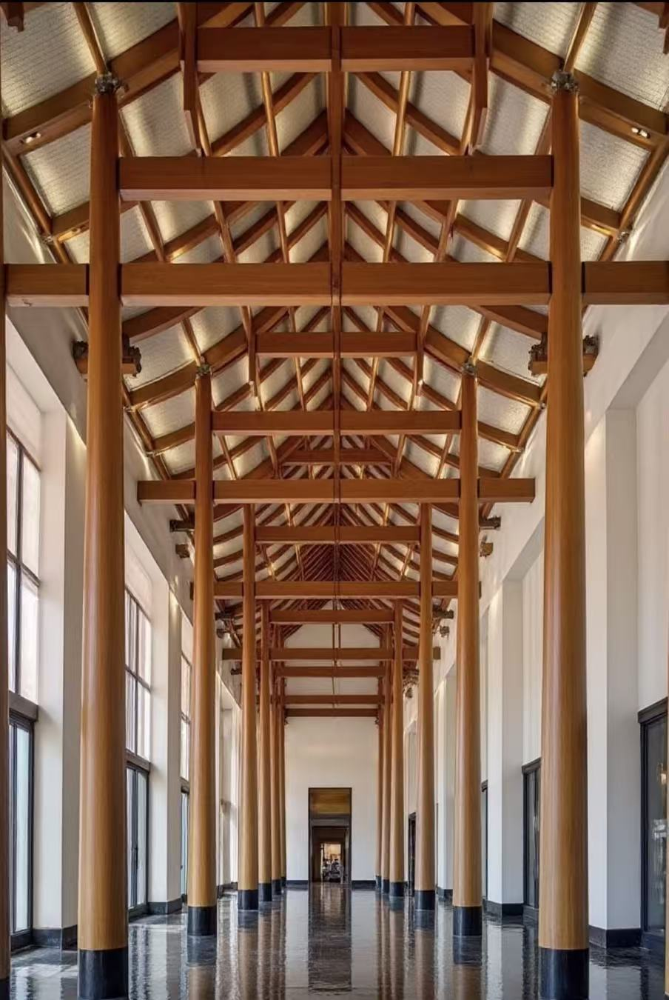
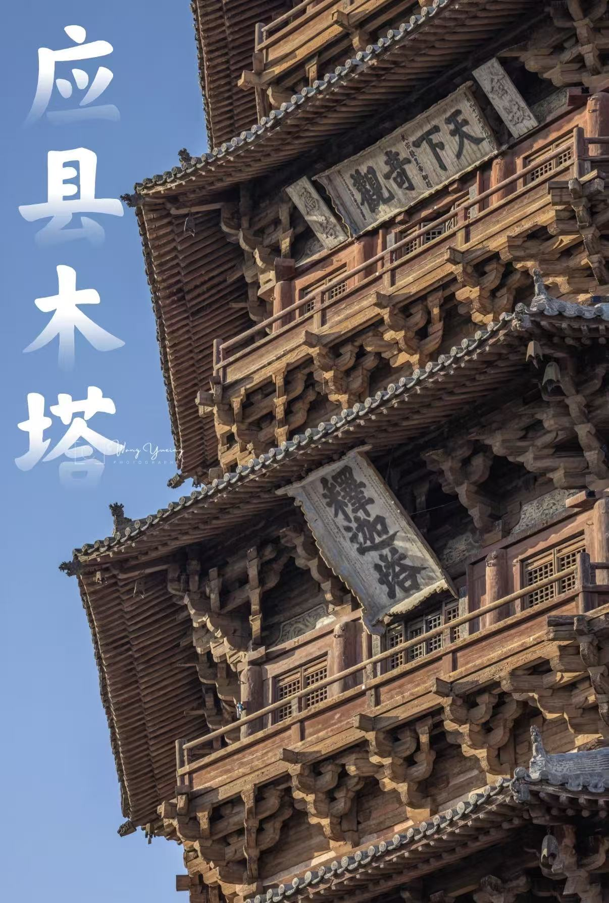
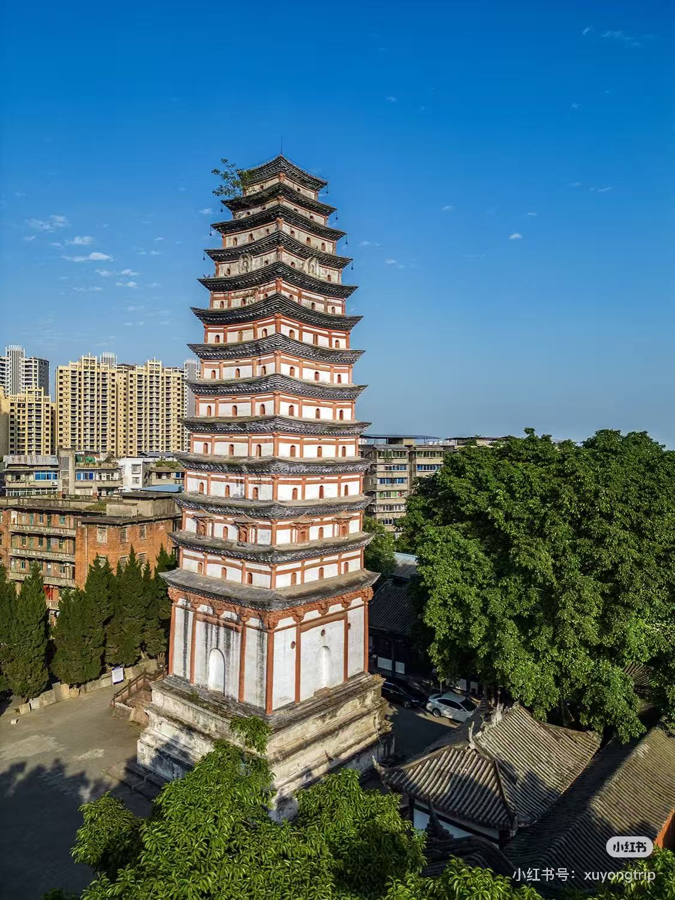

探索中国古代建筑的精湛技艺与建造智慧

木构架是中国古代建筑的主要结构形式，由柱子、横梁、斗拱等组成。这种结构体系具有以下特点：
以柱、梁、枋、檩为主要构件，形成框架结构，承重与围护分离。
木构架具有良好的弹性，能够有效抵御地震的破坏。
木构件可以预制，施工速度快，便于维修和重建。
斗拱是中国古代建筑特有的结构构件，位于柱顶、额枋与屋顶之间，具有以下功能：
承托屋檐，将屋面的重量传递到柱子上。
增加建筑的稳定性和抗震能力。
美化建筑外观，体现建筑的等级和风格。

榫卯是中国古代建筑中一种独特的连接方式，通过榫头和卯眼的配合来连接木材，具有以下特点：
榫卯结构不用钉子和胶水，完全依靠木材的摩擦力和结构力学原理，结构稳定，抗震能力强，便于拆卸和维修。这种技术体现了中国古代工匠的智慧和技艺，是中国古代建筑技术的重要组成部分。

中国古代建筑在砖石结构方面也有很高的成就，主要体现在以下几个方面：
如长城、南京城墙等，采用砖石砌筑，坚固耐用。
如应县木塔、嵩岳寺塔等，体现了砖石结构的高超技艺。
如牌坊、照壁等，展现了精湛的砖石雕刻技艺。